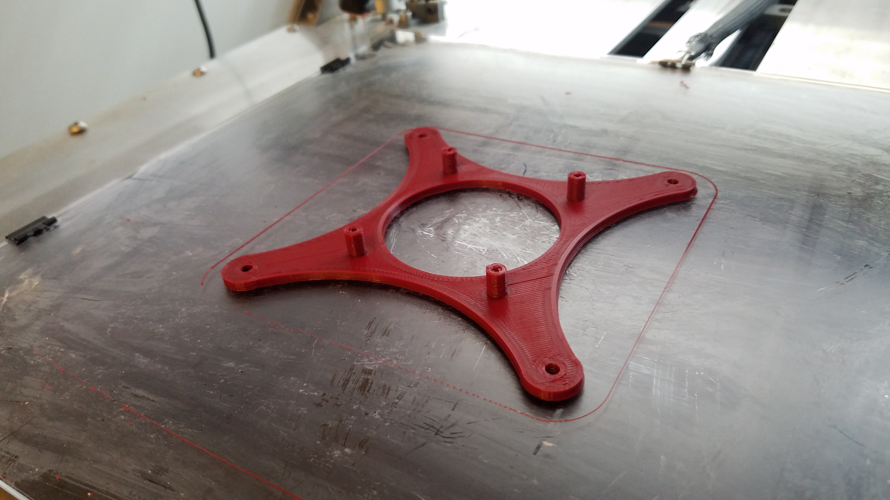
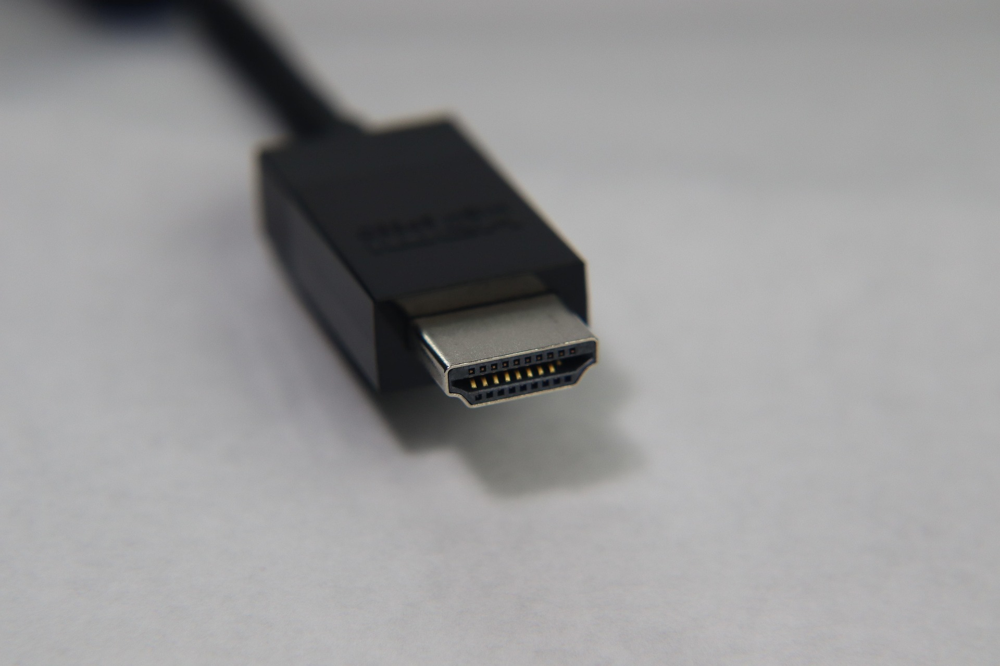
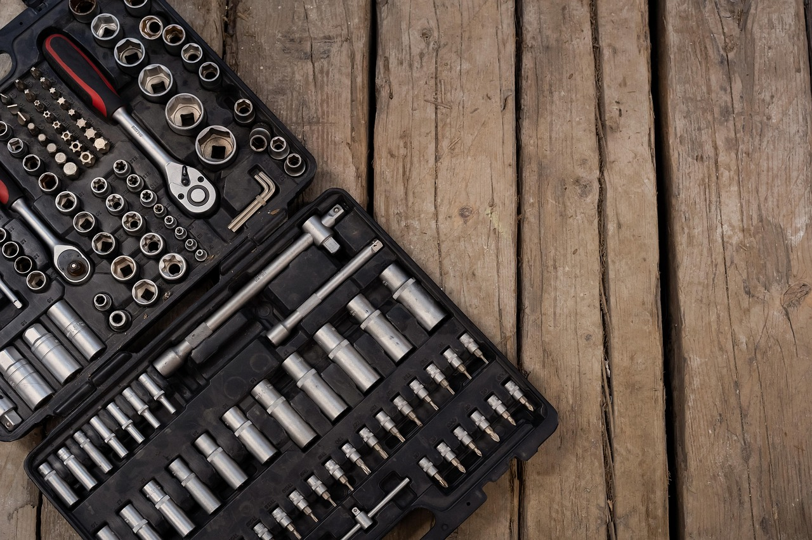
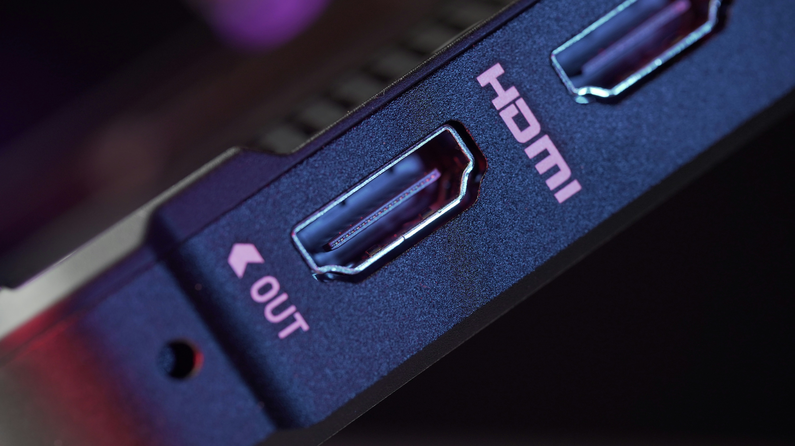

How To Set Up A Vertical Monitor For Your Computer
- 1. Acquire a monitor with a mount.
- ‣ Since you won't be setting your monitor on top of your desk, you'll need to acquire a
monitor with a
VESA mount.
-

Raspi3b+
vesa
mount by
Robosprout is licensed
under CC BY
2.0
- ‣ This mount will be attached to the back of your monitor, and it will connect to a separate
arm mount, which
you'll then fasten to your desk.
- 2. Acquire a VESA arm mount.
- ‣ You'll want to check the weight capacity for the mount, and make sure it can hold up the
monitor
you're purchasing.
-
Image by Mediamodifier
from Pixabay
- ‣ Make sure it has a 360 degree rotation option, so you can position your monitor however
you'd like.
- 3. Acquire an HDMI cord.
-

Image by Ralph
Grant on Pixabay
- ‣ You'll need it to connect between your monitor and your computer.
- 4. Once you have your monitor and mount, assemble them as directed by
your specific products.
- ‣ Each of these products will likely have their own little bit of assembly, before you connect
them together or set them up at your desk.
- ‣ Please follow any assembly instructions included with your monitor and arm mount products.
-
Image by Moondance
from Pixabay
- 5. Connect the mount to your desk.
- ‣ Put one side of the mount under your desk edge, and side of it above your desk edge.
-
 Photo by Andrej
Lišakov on Unsplash
Photo by Andrej
Lišakov on Unsplash
- ‣ Screw the connector until the mount is secured tightly to your desk.
- ‣ Move the arm mount until the VESA mount part is where you would like your monitor to sit.
- 6. Connect the monitor to the mount.
- ‣ Slide the monitor into the mount, so that the VESA pieces interlock.
- ‣ Screw in the VESA mount screws to secure the monitor in place.
-

Image by SinayKata
from Pixabay
- ‣ Turn the monitor until it is vertical.
- 7. Connect an HDMI cord between the monitor and your PC.
- ‣ Find an HDMI port on your monitor.
-

Photo by TheRegisti
on Unsplash
- ‣ Plug the HDMI cord into that port, and connect the other end of the cord to an HDMI port on
your PC.
- 8. Change the monitor orientation to vertical.
- ‣ On Windows, select Start, then to go to > Settings > System > Display.
- ‣ Find the 'Rearrange Your Displays' section.
- ‣ Press 'Identify' to see which monitor is which (a number will briefly show up on your
monitor screen).
- ‣ Select the relevant monitor.
- ‣ Scroll down to 'Orientation', and select 'Portrait (flipped)' from the dropdown options.
- ‣ If you're using a different operating system, please find corresponding monitor orientation
instructions for your operating system.